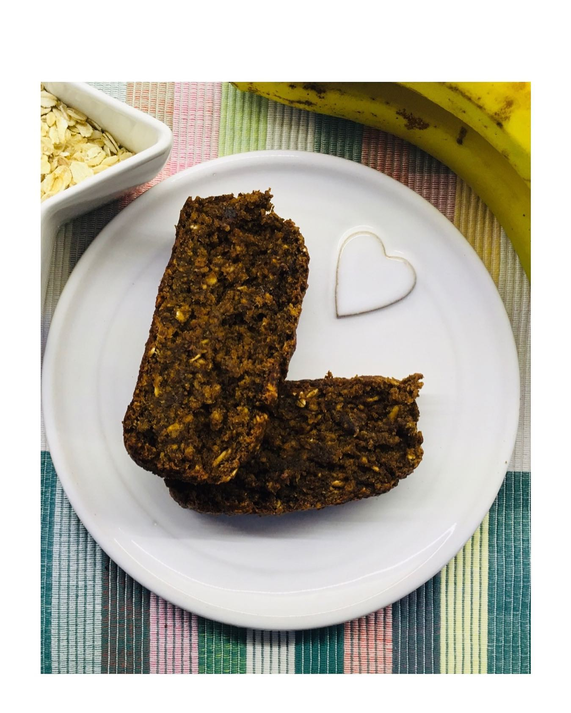

Ovocný chlebíček podľa @denikmaminky — Normy Jedál
Včera jsem vám představila na blogu máslíčka @nutspread a přípravu domácích tyčinek s arašídovým máslem. (Skroluj pro více info k předchozímu postu).
Dnes jsme ukuchtili sladký chlebíček také s tímto máslíčkem.
Jelikož je chlebíček fakt výborný a u domácího testování (rozuměj u mé druhé drahé polovičky a Bertíka) prošel na ⭐️⭐️⭐️⭐️⭐️, tak se s vámi podělím o recept. ✍🏻3...2...1...
Recept je nabouchaný zdravými tuky a bílkovinami díky ořechovému máslu,
díky melase obohacený o železo a
díky banánům o draslík, hořčík a vitamín B6.
A to všechno najdete v tomto chlebíčku
Banánový chlebíček
* Arašíd. máslo 85 g (doporučuji @nutspreadcz 🤎)
* Třtinový cukr 70 g 🍚
* Melasa 100 g
* Žloutek 1 ks 🥚
* Banány 2 ks 🍌
* Ovesné vločky mleté 235 g
* Jedlá soda 1/2 lžičky
* Perníkové koření
* Sůl 1/4 lžičky
* trochu mléka 🥛
Nejdříve utřeme třtinový cukr s melasou a máslem. Pak přidáme žloutek, ovesné vločky, sodu, sůl a koření. Pořádně vše vyšleháme a nakonec zapracujeme rozmixované banány s trochou mléka. Konzistence by měla být tuhá a tekutá. Těsto vlijeme do formy (na chleba nebo srnčí hřbet) a pečeme cca 45 minut v předehřáté troubě 180 stupňů Celsia.
#melasa
#arasidovemaslo
#bananabread
#zdravepeceni
#ovocnychlebicek